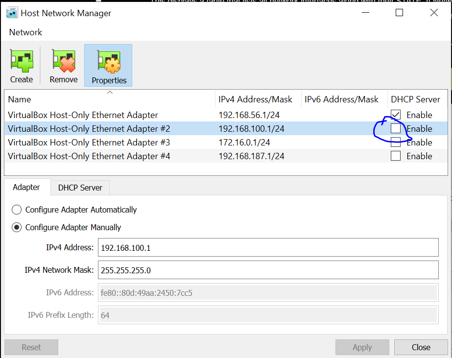

Configure static IP address mannually
January, 25, 2021
We need to assign an static IP address to our server using NetworkManager, when we create our Virtual Machine in Virtual Box, we have to assign
a “Host-Only Adapter“ with no DHCP enabled see figure 1 below, see the DHCP is disabled

- The IP must be in the range of the host as 192.168.100.2 - 192.168.100.254
- DNS 192.168.1.1 from /etc/resolv.donf
- Gateway from
[root@server ~]# ip r
- IP Address and MAC-Address from
[root@server ~]# ifconfig -a
- Set the hostname as:
[root@server ~]# hostnamectl set-hostname ipaserver.freeipa.local --static
- final content of ifcfg-enp0s8
[root@server ~]# cat /etc/sysconfig/network-scripts/ifcfg-eth1
Posted in Category #1 | Edit | 1 Comment »
Useful network commands
January, 25, 2021
To find local IP address
[root@server ~]# ifconfig ${1:-enp0s3} | awk '/inet / {print $2}'
function to get bcast address for local computer
[root@server ~]# ifconfig ${1:-enp0s3} | awk '/broadcast/ {print $6}';
Function to find the network netmask
[root@server ~]# ifconfig ${1:-enp0s3} | awk '/netmask/ {print $4}'
You can use the following scripts (ipaServerReview.sh) to check the network values and create the network scripts.
Following scripts assumes the network to configure is enps03, but we can changed to be an argument, in fact the
script name should be eth0, but by the time I'm writing this I do not have it yet.
The ipaServerReview.sh is based on Ondrej Hamada, FreeIPA Demo
ipaServerReview.sh